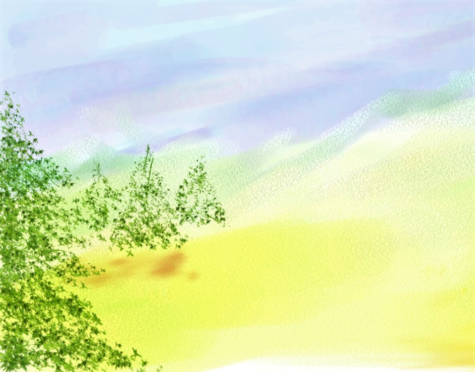

Watercolors by Kathleen...
Hello,
I live in Corning, NY and spend my free time painting watercolors. I like the soft blues and greens of landscapes. I have also been dabbling in digital watercolors using my Wacom tablet. The image to the left is and example of digital art. When I look at my subjects the colors are incredible and I want to show them as they are, but I also like to experiment with different colors. Enjoy the site.
Thanks for visiting